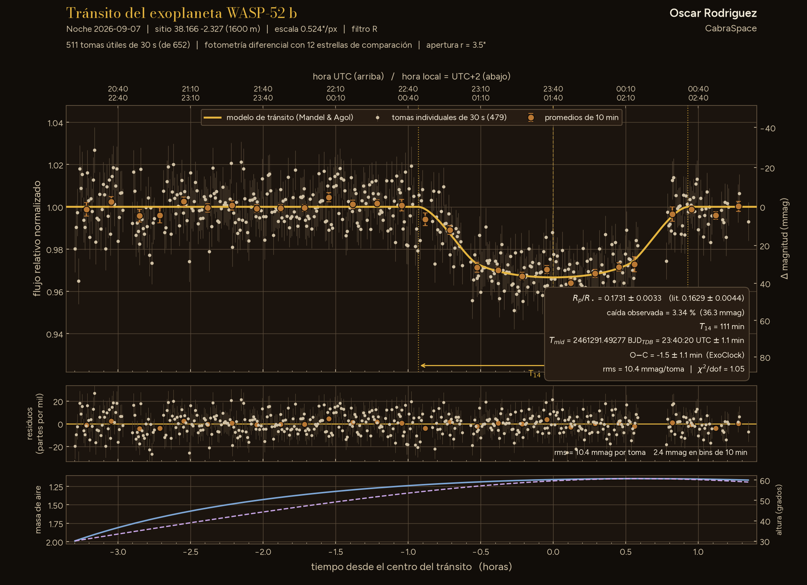

Nº IFotografía y medidas
El cuaderno de observación
Lo que hago desde el observatorio AstroCamp: imágenes de cielo profundo, curvas de luz de tránsitos de exoplanetas y el eclipse de 2026.
FotografíaMedidas

SerieVídeo
Eclipse solar, doce de agosto
El eclipse del 12 de agosto de 2026 en vídeo, con la Vaonis Vespera Pro.
Ver la serie

Lám. XExoplanetas · 22 · IX
Tránsito de Qatar-1 b

Lám. IXExoplanetas · 21 · IX
Tránsito de WASP-52 b parcial

Lám. VIIIExoplanetas · 15 · IX
Tránsito de TrES-3 b

Lám. VIIExoplanetas · 13 · IX
Tránsito de Qatar-3 b parcial

Lám. VIExoplanetas · 7 · IX
Tránsito de WASP-52 b parcial

Lám. VExoplanetas · 6 · IX
Tránsito de TrES-2 b parcial

Lám. IVExoplanetas · 3 · IX
Tránsito de WASP-59 b parcial

Lám. IICielo profundo · 24 · IV
PK 164+31.1, nebulosa planetaria

Lám. ICielo profundo · 29 · I
M82, la galaxia del Cigarro